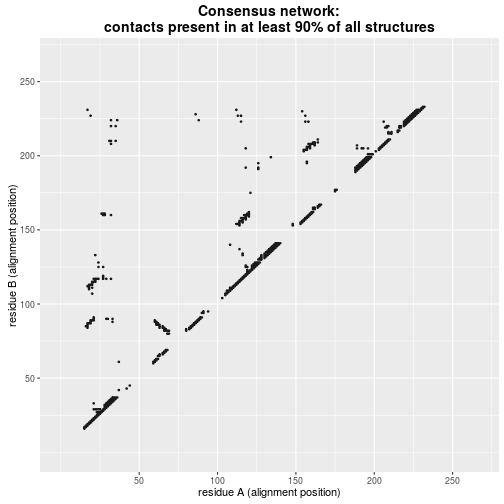
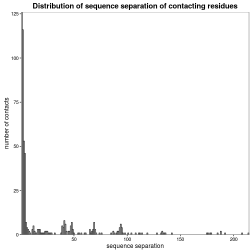
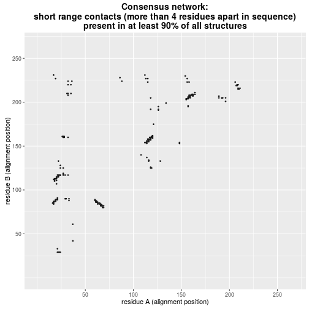
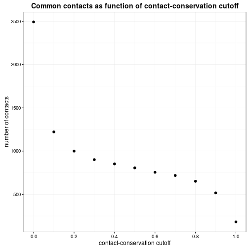

This preliminary report about the consensus residue contact network is automatically generated by the script 'analysis.Rmd'. The script can be easily modified (most conveniently in RStudio) to use different parameters for the plots below or to exapand the analysis.
The analysis at hand reads in the the following files:
(* reference alignment (directory 'data'): The reference alignment is provided by the user (in fasta format). The software uses it to identify structurally equivalent resiudes. This way, residue contacts can be compared across structures even though the residues may be named differently in different structures.)
The plot below shows a matrix of residue contacts. The x- and y-axis are the positions of the reference alignment. A dot indicates that contact between two given residues is present in at least 90% of all structures.
All easy to make changes are highlighted with comments in capital letters in the script 'analysis.Rmd'.

In any given given structure, short range contacts outnumber long range contacts. Therefore, it is not surprising that the same is true for consensus contacts (residue contacts present in all or most structures of a given protein family). The plot below shows the number of consensus residue contacts at a given sequence separation. It shows that the vast majority of consensus contacts is short range.

Depending on the project at hand short range contacts may not be of interest. Therefore, the plot below shows the contact matrix without short range contacts. In this example, only contacts between residues which are more than 4 residues apart in the sequence are shown. Among the excluded contacts are the hydrogen bonds of the alpha helix (as in the alpha helix, residue i contacts residue i+4).
In order to change the cutoff to a different value (e.g. to show only contacts between residues which are at least 10 residues apart in the sequence), change the varialbe 'sequence_separation_cutoff' in the script 'analysis.Rmd' (highlighted by comment in capital letters).

The plot below shows the number contacts shared between a given fraction of all structures.

For a good overview about the method of residue contact networks, please refer this review and the references therein:
Lesley H. Greene. “Protein structure networks”. Briefings in Functional Genomics 11.6 (2012), pp. 469–478. DOI : 10.1093/bfgp/els039
An interesting example of how to use consensus residue contact networks is presented in this paper:
Tilman Flock et al. “Universal allosteric mechanism for G-alpha activation by GPCRs.” Nature
524.7564 (2015), pp. 173–179. DOI : 10.1038/nature14663.